Lichtstellen auf Platte I — Entwicklung auf einem Markenfeld PROTOTYP / PROTOTYPE
Eine Lichtstelle ist örtlich geschwächter bis fehlender Druck — Ausdruck einer beschädigten oder zugesetzten Stelle der Platte, die sich während des Druckes weiterentwickelt. In der Sammlung sind bisher 92 Stücke der Platte I mit Lichtstelle auf 27 Markenfeldern erfasst (am meisten Feld 9 — 16 Stück, Feld 65 — 9, Feld 27 — 7). Diese Seite zeigt die vorgeschlagene Form der Darstellung am Beispiel von Feld 9.
Feld 9/I — wo die Lichtstelle sitzt
Die Lage wurde automatisch ermittelt: Jedes Stück wird mit der aus gesunden Stücken gebildeten Medianzeichnung des Feldes verglichen; die „fehlende Farbe“ wird über alle 16 Stücke summiert. Der Schwerpunkt liegt in der rechten Randspalte am Ende der Aufschrift SLOVENSKÁ.
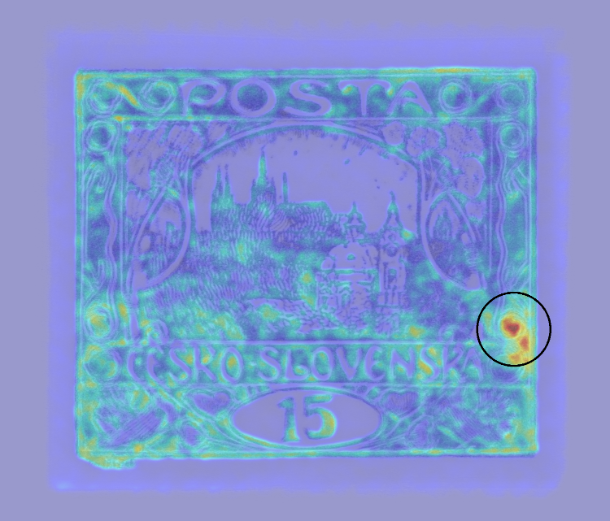
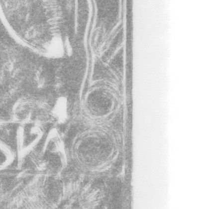
Entwicklungsreihe — 16 Stücke, geordnet nach Stärke der Lichtstelle
Die Reihung erfolgt vorerst nach der gemessenen Stärke der Lichtstelle (Index = durchschnittliche fehlende Farbe im Schwerpunkt); Stücke mit lesbarem Stempeldatum lassen sich chronologisch ordnen, um die tatsächliche zeitliche Entwicklung zu verfolgen. Die Ausschnitte sind registriert — die Lichtstelle sitzt bei allen an derselben Stelle.
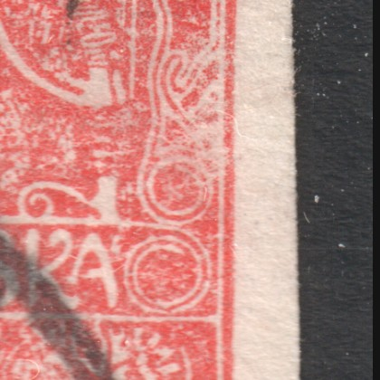
index 12
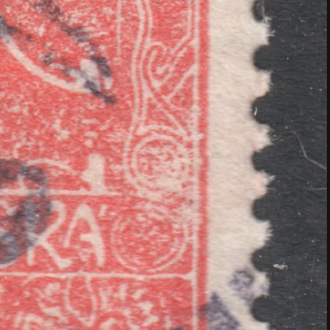
index 12
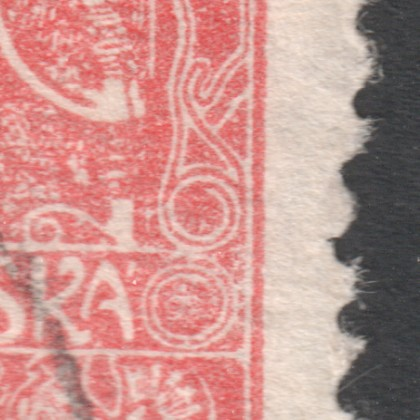
index 12
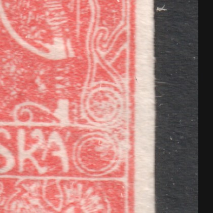
index 13
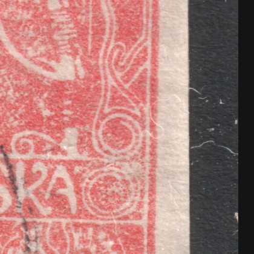
index 16
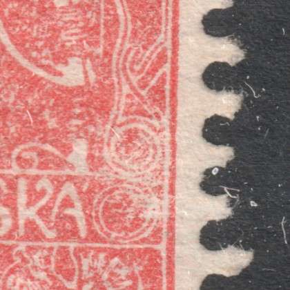
index 19
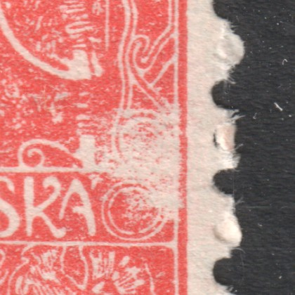
index 19
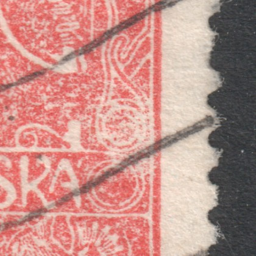
index 19
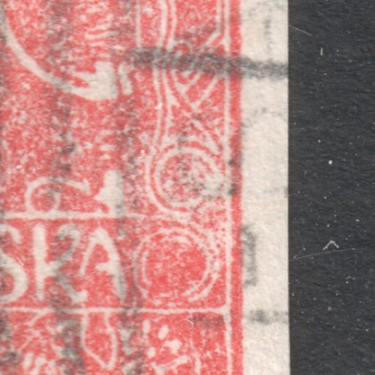
index 19
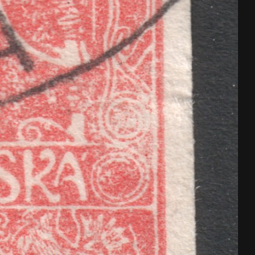
index 20
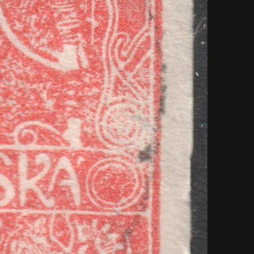
index 20
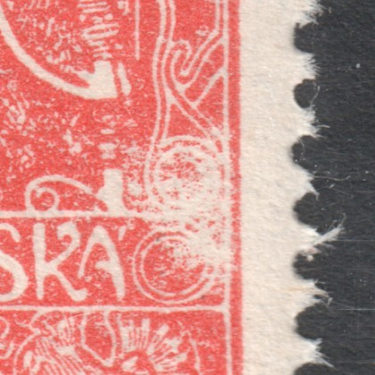
index 20
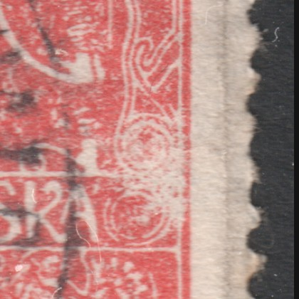
index 21
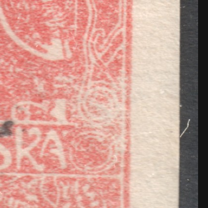
index 24
index 24
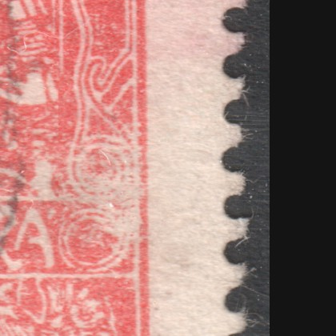
index 39
Wie die vollständige Fassung aussehen würde
Dieselbe Vorlage für alle 27 Felder: Feldauswahl wie im Feldvergleich (Pfeiltasten ←/→), Heatmap + Entwicklungsreihe + vollständige Marken, und in der Galerie der Platte I ein Abzeichen „Lichtstelle“ bei den betroffenen Feldern mit Verlinkung hierher. Ergänzen lässt sich auch das Gegenstück — Schleier (Farbüberschuss) — nach demselben Verfahren mit umgekehrtem Vorzeichen.